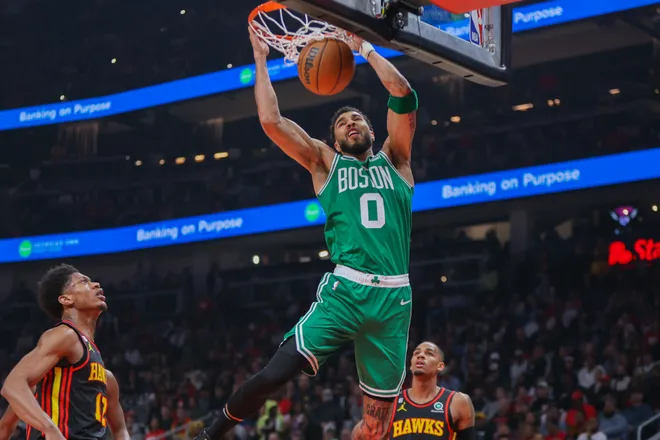
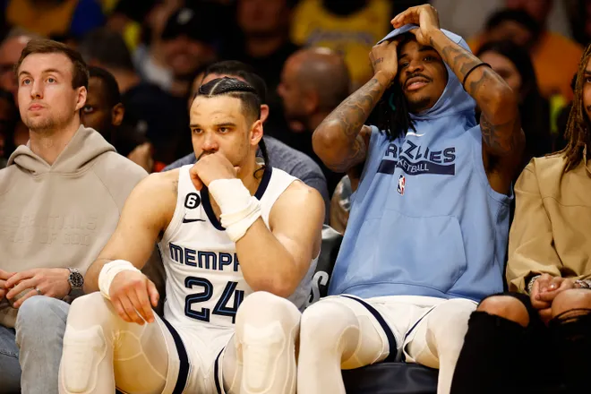
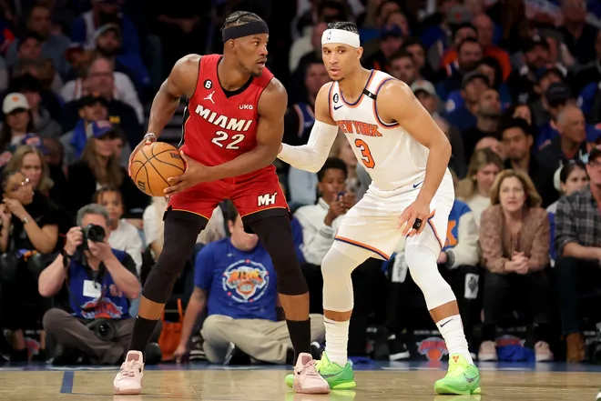
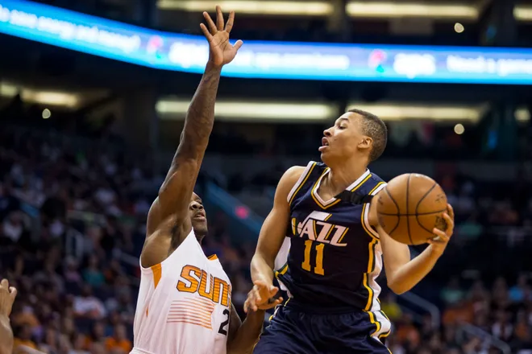
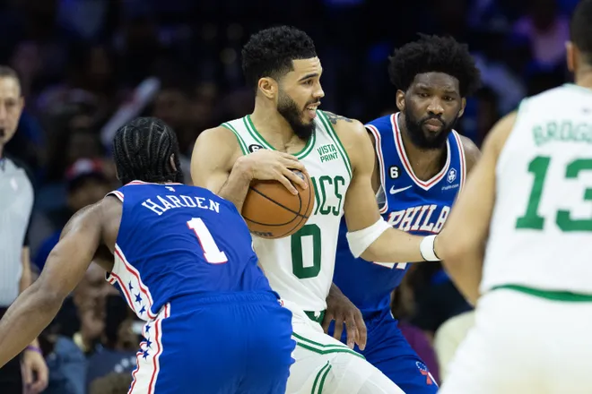

01.05.2023 11:48 Рейтинг восьми оставшихся команд плей-офф НБА к началу второго раундаДалі...

01.05.2023 13:26 Диллон Брукс не жалеет о трештоке в адрес Леброна Джеймса: «Я такой, какой я есть» Далі...

01.05.2023 10:35 ESPN приносит извинения за стоковые кадры башен-близнецов Всемирного торгового центра во время игры Heat-Knicks Далі...

29.04.2023 17:29 Леброн Джеймс в последний раз посмеялся над Диллоном Бруксом после того, как «Лейкерс» выбили «Гриззлис» Далі...

30.04.2023 8:30 «Лос-Анджелес Лейкерс» только начинают играть в плей-офф НБА после победы над «Гриззлис» Далі...

28.04.2023 10:35 Phoenix Suns и Mercury подписали новый телевизионный контракт, который дает фанатам возможность смотреть все игры бесплатно Далі...